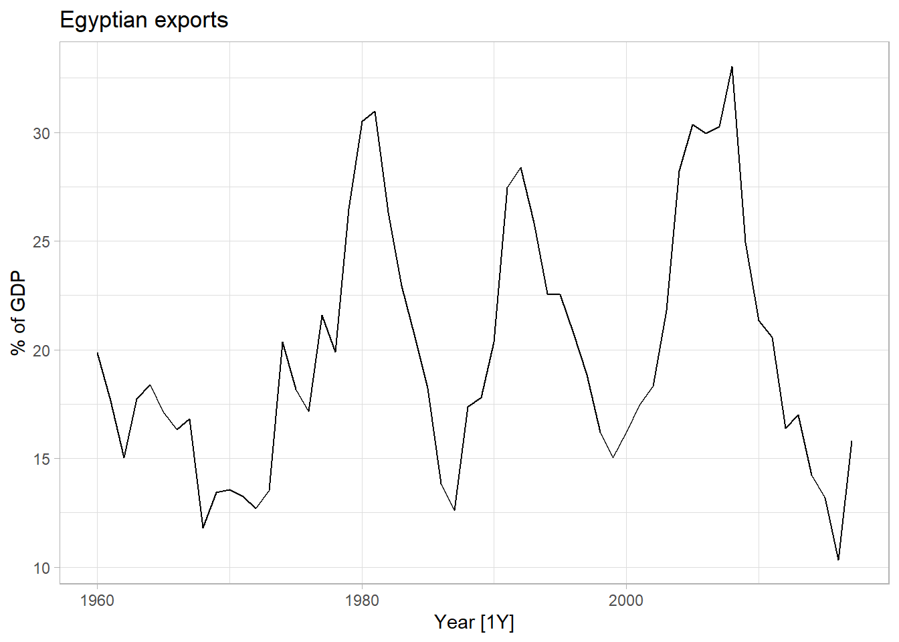

The Fable package is essentially version 3.0 of Forecast. However, the name change reflects some considerable updates.
Rather than using time series, Fable uses a data type called the tsibble, or time series tibble. In theory, this is similar to a tibble, a data type most people work with on a regular basis and should work similarly. This also means data can have a specific column for time stamps which can be helpful if the times are slightly irregular. In addition to changing the supported data type, Fable has also changed the way arguments are passed to functions in a way that is more consistent with models in the stats package. Most data scientists that use R have fit linear models using a y ~ x syntax, so this should feel familiar for those who start predicting with Fable. However, it may be confusing for those already familiar with Forecast.
Cross Validated, Stack Exchange’s Q&A for Statistical Topics
In reality, even though tsibbles work with dplyr, I found there was a significant learning curve to this data type even when familiar with tibbles. My intention was to convert the time series used for my last post on Forecast’s arima (International Tourists to Australia), to a tsibble and use it here. However, though the data displayed as a tsibble, the model function did not recognize it as a tsibble no matter how I tried. Instead, we will use the data and examples from the text FPP3 9.7 to illustrate some of the differences and similarities between Forecast and Fable.
# install.packages('fpp3')#install.packages('fable')library(fable)library(tsibble)library(tsbox)library(fpp3)library(dplyr)global_economy %>%filter(Code =="EGY") %>%autoplot(Exports) +labs(y ="% of GDP", title ="Egyptian exports") +theme_light()

Above is a plot of exports from Egypt, from 1960 to 2017, as a percentage of GDP. Notice, Fable does have an autoplot function.
ARIMA
Fable can estimate an ARIMA model much like auto.arima from the Forecast package, but it is combined with the ability to specify the ARIMA model into one function, ARIMA(). If data is passed in without specifying the model’s order, ARIMA() will select the best model.
fit <- global_economy %>%filter(Code =="EGY") %>%model(ARIMA(Exports))report(fit)
One unique feature of Fable is that more than one model can be evaluated at a time. Fable will return a Mable or model table when more than one model is passed into the model function.
fit <- global_economy %>%filter(Code =="EGY") %>%model(Ets =ETS(Exports),Auto =ARIMA(Exports),Arima400 =ARIMA(Exports ~pdq(4,0,0)))report(fit)
# A tibble: 3 x 12
Country .model sigma2 log_lik AIC AICc BIC MSE AMSE MAE ar_ro~1
<fct> <chr> <dbl> <dbl> <dbl> <dbl> <dbl> <dbl> <dbl> <dbl> <list>
1 Egypt, Arab~ Ets 10.3 -184. 375. 375. 381. 9.95 24.1 2.45 <NULL>
2 Egypt, Arab~ Auto 8.05 -142. 293. 294. 303. NA NA NA <cpl>
3 Egypt, Arab~ Arima~ 7.88 -141. 293. 295. 305. NA NA NA <cpl>
# ... with 1 more variable: ma_roots <list>, and abbreviated variable name
# 1: ar_roots
Mables make it easy to compare the performance of different models. Here the ARIMA model chosen by Fable has the best AICc.
Accuracy
We can then pass the mable to accuracy() and easily compare measures.
fit %>%accuracy() %>%arrange(RMSE)
# A tibble: 3 x 11
Country .model .type ME RMSE MAE MPE MAPE MASE RMSSE ACF1
<fct> <chr> <chr> <dbl> <dbl> <dbl> <dbl> <dbl> <dbl> <dbl> <dbl>
1 Egypt, Arab ~ Arima~ Trai~ -0.0219 2.68 2.11 -2.18 11.3 0.845 0.844 -0.0303
2 Egypt, Arab ~ Auto Trai~ -0.0465 2.74 2.17 -2.36 11.7 0.872 0.860 -0.0219
3 Egypt, Arab ~ Ets Trai~ -0.0669 3.15 2.45 -1.70 12.7 0.984 0.991 0.187
While the AICc favored Fable’s ARIMA selection, the RMSE is better for the ARIMA which we specified.
Forecast
Fable allows us to pass a forecast horizon for each model using natural language.
While much of the functionality is the same there are many things that are subtly different from Forecast. Some related to using tsibbles like needing to use TSibble’s difference() rather than Forecast’s diff() to make data stationary. Others are related to the package itself, like syntax and function name changes. For example, Forecast used summary() rather than report() to print an overview of a model or mable’s fit. While not significant, the number of subtle differences, can make it frustrating to work with Fable after becoming familiar with Forecast.
A few important differences should be mentioned: Both packages use state space equations on the back end. However, Forecast uses more C++ and is significantly faster at most tasks. However, if you want access to the hidden state’s values, you will need to use Fable.